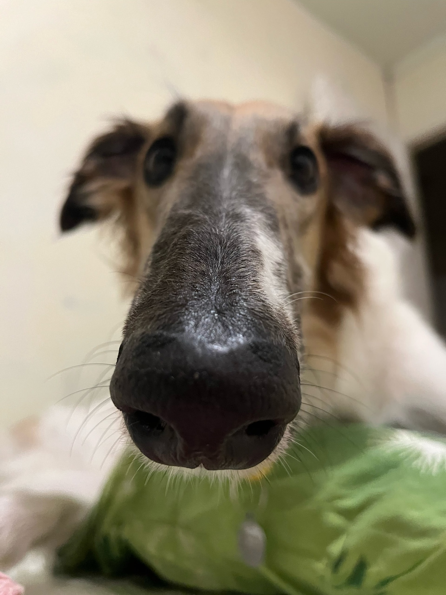

Стихотворения
Я вас любил: любовь еще, быть может…
Я вас любил: любовь еще, быть может,
В душе моей угасла не совсем;
Но пусть она вас больше не тревожит;
Я не хочу печалить вас ничем.
Я вас любил безмолвно, безнадежно,
То робостью, то ревностью томим;
Я вас любил так искренно, так нежно,
Как дай вам Бог любимой быть другим.
Няне
Подруга дней моих суровых,
Голубка дряхлая моя!
Одна в глуши лесов сосновых
Давно, давно ты ждешь меня.
Ты под окном своей светлицы
Горюешь, будто на часах,
И медлят поминутно спицы
В твоих наморщенных руках.
Глядишь в забытые вороты
На черный отдаленный путь:
Тоска, предчувствия, заботы
Теснят твою всечасно грудь.
То чудится тебе…
Нате!
Через час отсюда в чистый переулок
вытечет по человеку ваш обрюзгший жир,
а я вам открыл столько стихов шкатулок,
я — бесценных слов мот и транжир.
Вот вы, мужчина, у вас в усах капуста
Где-то недокушанных, недоеденных щей;
вот вы, женщина, на вас белила густо,
вы смотрите устрицей из раковин вещей.
Все вы на бабочку поэтиного сердца
взгромоздитесь, грязные, в калошах и без калош.
Толпа озвереет, будет тереться,
ощетинит ножки стоглавая вошь.
Послушайте!
Послушайте!
Ведь, если звезды зажигают —
значит — это кому-нибудь нужно?
Значит — кто-то хочет, чтобы они были?
Значит — кто-то называет эти плево́чки жемчужиной?
И, надрываясь
в метелях полу́денной пыли,
врывается к богу,
боится, что опоздал,
плачет,
целует ему жилистую руку,
просит —
чтоб обязательно была звезда! —
клянется —
не перенесет эту беззвездную муку!
Письмо к женщине
Вы помните,
Вы всё, конечно, помните,
Как я стоял,
Приблизившись к стене,
Взволнованно ходили вы по комнате
И что-то резкое
В лицо бросали мне.
Вы говорили:
Нам пора расстаться,
Что вас измучила
Моя шальная жизнь,
Что вам пора за дело приниматься,
А мой удел —
Катиться дальше, вниз.
Любимая!
Меня вы не любили.
Не знали вы, что в сонмище людском
Я был как лошадь, загнанная в мыле,
Пришпоренная смелым ездоком.
Что это такое?
В этот лес завороженный,
По пушинкам серебра,
Я с винтовкой заряженной
На охоту шел вчера.
По дорожке чистой, гладкой
Я прошел, не наследил…
Кто ж катался здесь украдкой?
Кто здесь падал и ходил?
Подойду, взгляну поближе:
Хрупкий снег изломан весь.
Здесь вот когти, дальше — лыжи…
Кто-то странный бегал здесь.
Кабы твердо знал я тайну
Заколдованным речам,
Я узнал бы хоть случайно,
Кто здесь бродит по ночам.
Из-за елки бы высокой
Подсмотрел я на кругу:
Кто глубокий след далекий
Оставляет на снегу?..